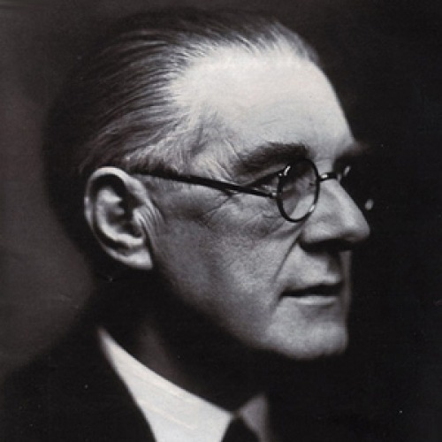
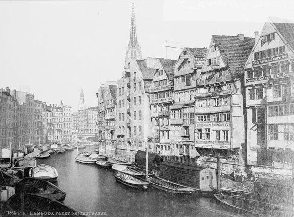
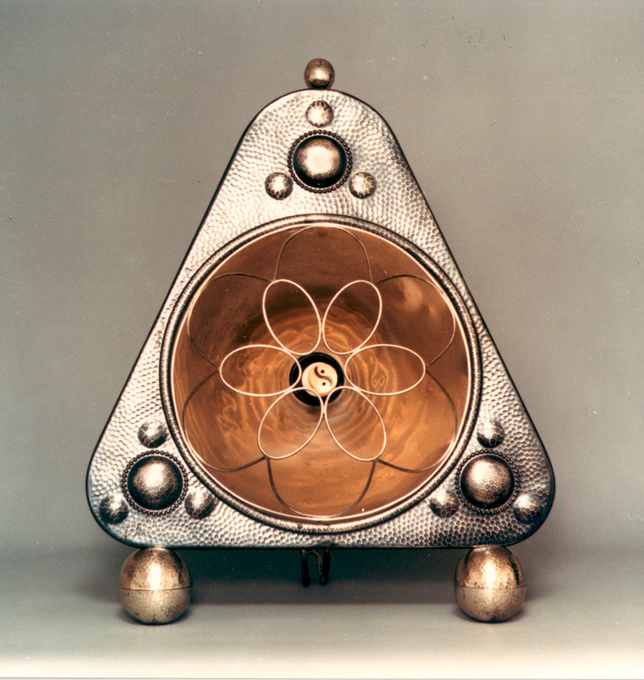
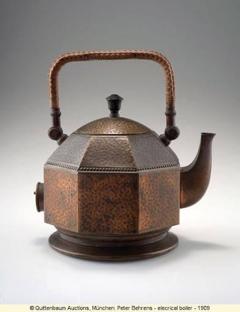
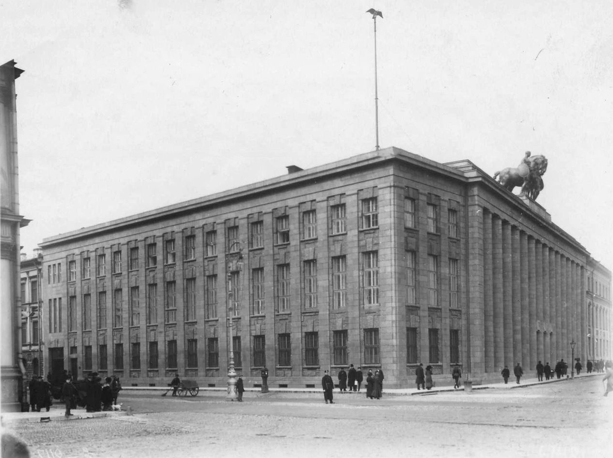
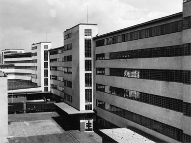
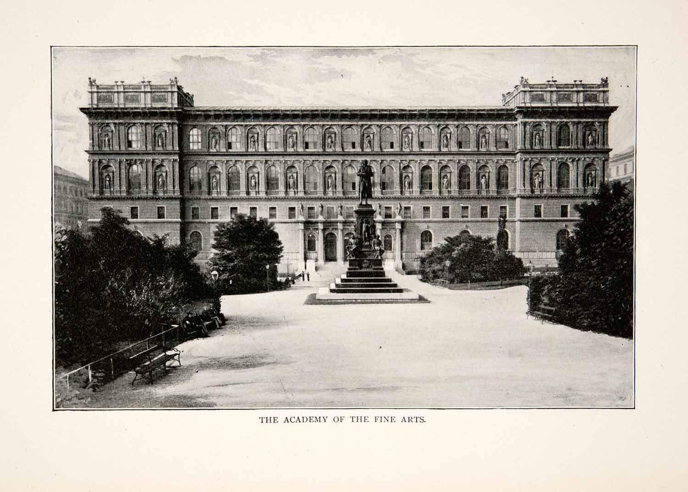

Peter
Behrens
Early Life

Peter Behrens was born on the 14th of April, 1868 in Germany. He was orphaned at 14, but was left a modest inheritance. Behrens attended the Gewerbeschule (School of Applied Arts) in Hamburg.
Industrialist Art

radiant heater · 1908As an industrial designer, Behrens created many works in the early 1900s. As the head of design at German manufacturing compant AEG, Behrens designed heaters, boilers, and other industrial appliances.

electrical boiler · 1909Later Works
Behrens's artworks shifted from paintings and small appliances to buildings, showcasing a Brick Expressionism style. He designed the Weissenhof Estate Exhibition House and the Linz Tobacco Factory in Austria.


